こんにちは。ろきさです。
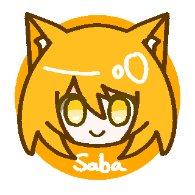
今日は、さばるをCardWirthの沼にぶち込むべく
私が沼にハマった原因を分析・圧縮してマニュアルにしたよ。
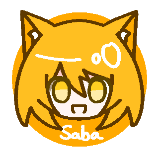
覚悟しとけよ！
あ、ゲームの説明とかない感じ？
もうとっくに説明してるはずだからね。
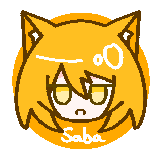
それでは、ダウンロードをしよう！ ということでこのサイトに飛……
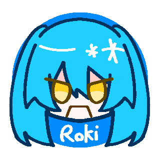
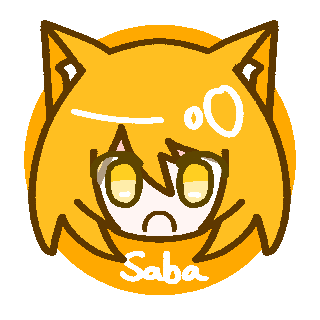
すべての解説サイトでは、このサイトで配布されている
1.50版という最もスタンダードなバージョンが推奨されている！
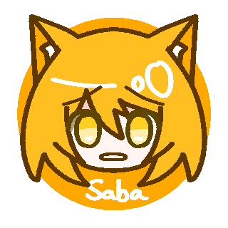
しかァし！
バックログとかあるので私は別のバージョンを推します。
そして私はこのバージョンを前提に解説していきます。
うわぁ。
バックログ偉大だろうが！
こんな感じだから、間違ってこのサイトにたどり着いてしまった哀れな子羊は
今すぐ親切な初心者向けサイトを見つけよう。
ってか、一番上に出てくるサイトに丁寧なチュートリアルがあります。
で、そのバージョンってのは何？
Py版というヤツ。ここからダウンロードできるよ。
ドライブのリンクが切れてたら、ミラー版を選択しようね。
ほ～んテッドマンション。
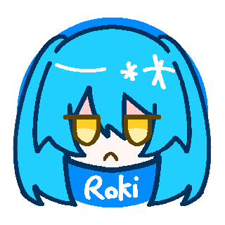
起動は？
解凍して.exeをクリック。
私がそれをわからないという想定はないんですね。
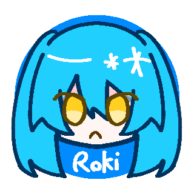
◆会話書き換えるのが面倒だった人からの後付け注意◆
このゲームはファイル量膨大。フォルダ移動面倒だからちゃんとした場所に解凍しよう（ｎ敗）
よくわからなければドキュメントにゲームフォルダとか作って解凍すればいいよ。
それと、解凍ソフトは今後のことを考えて7zipがおすすめ。
ちなみにこのゲーム、20年以上前なので.lzhとか解凍することになる。
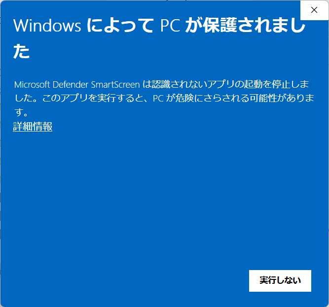
なんかでてきた。
詳細情報から実行。
私がこれをわからないという想定はあるんですね。
あるから書いてる。
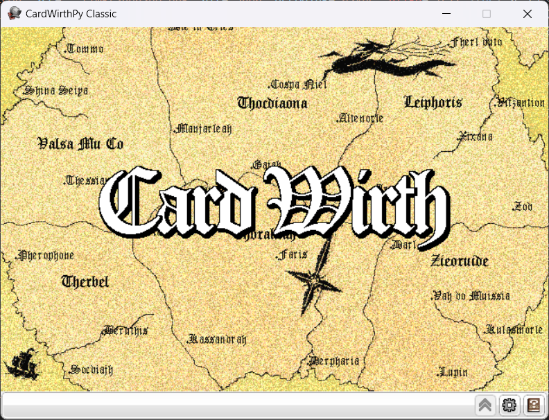
起動した～！
F4でフルスクリーンにできるからね～。私は小さいウィンドウが好きだからしないけど。
ここからは別の解説サイトに丸投げするんだけど、その前に設定を見よう。
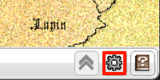
これだね。
右のはヘルプだから、後で目を通しておくといいよ。
スキンとかも書いてあるし。
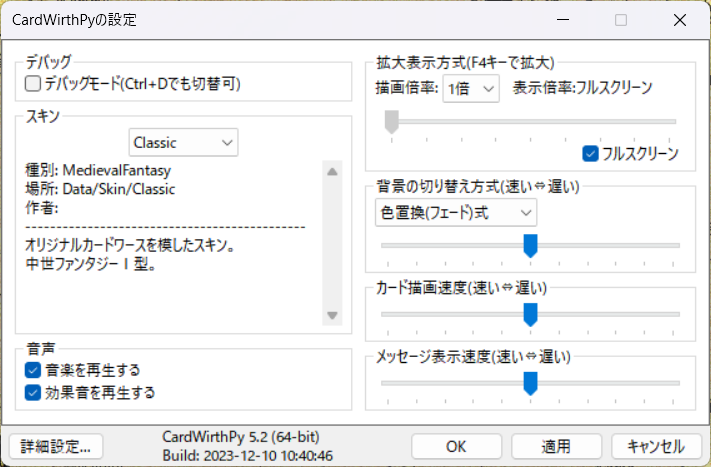
どこを設定すればいいの？
とりあえず、左下の詳細設定を押してみて。
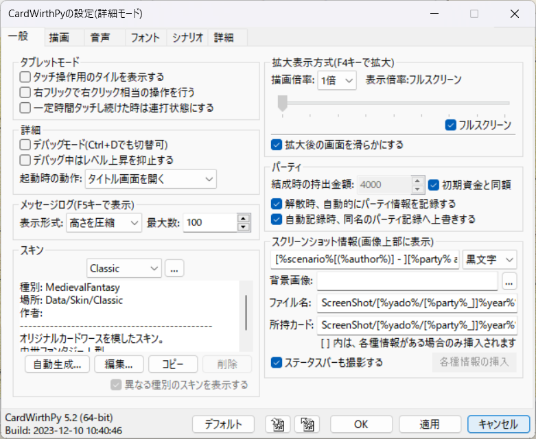
うわぁなんかいろいろ出てきた！
「描画」タブにある描画速度とかは、プレイしてから自分なりに変えてみてね。
メッセージ表示速度は、最速だと一瞬で表示される。
私はサクサク動作が大好きだから、戦闘速度と背景切替速度以外は最速にしてるよ。
戦闘速度は最速にすると何が起こってるかわからないから非推奨。
で、設定すべき項目は？
ない。
は？ なんで開かせた？
設定したい人もいるかなって。
殴るよ。
確認じゃなくて予告やめて。
「一般」左上のタブレットモードをいじるとクリックですべての操作ができるようになるのと、
「シナリオ」タブから、シナリオを保存する場所を変えられるってことを伝えたくてさ。
あと、「詳細」タブの最初から詳細モードで設定はオンにしたほうが便利。
「フォント」タブの装飾フォントも試す価値あり。
はあ。まあ、理由があるならいいんだけどさ。
それで、さっさとゲームを始めたいんですけど。
はいはい。
では、このサイトに飛んでください。
え、丸投げ？
予告してたから罪じゃないよね。
突然バーボンハウスされたんだけど。
ダウンロードまではここでやったから、流し読みOK。
解説すっごい丁寧だから、やりながらゴブ洞を制覇してきてね。
最初の公認ファンサイトもチュートリアル丁寧だから、別にこっちでも似たようなこと書いてあるよ。
あ、キャラ作成まで行ったらいったん戻ってきてね～。
はーい。
戻ってきたよ。
えらい。
それで、なんの話？
まず、このページを紹介されているということは、
一次創作に狂った同志ということだ。
まあ、そうね。
というわけで同志向けのお話をします。
どうぞ。
顔画像はData/Faceのフォルダに入れるのは読んだと思うけど、
Py版にあるCommonフォルダは共用です。
Common-YNGは男女問わずの若者、Commonは男女年齢完全共用。
そういえば、女の画像を平気で男に使う人だったか。
侮辱ですか？
顔画像は74*94、(0,0)（一番左上のピクセル）の色が透過されるけど、透過pngにも対応してる。
そのへんの絵柄が好みなキャラメーカーで適当に見繕って加工が吉。
ちなみに、顔画像の差し替えは今じゃなくてもいい。また絶好の機会があるからね。
やってれば自分で顔画像描きたくなるかもだしね。
あとは、ここに拡大時きれいに画像を表示する方法が書いてある。
画面を拡大しない人には不要なやつだけど。
次はキャラメイクの話をするんだけど。
ほう。
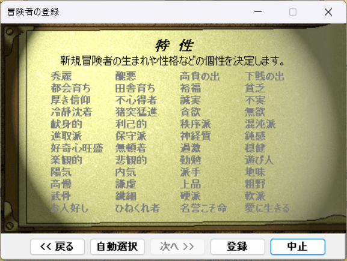
この特性ってヤツは、シナリオによっては反応したりして。
冒険者の性格設定にとっても重要なんだけど。
もしかして、ステータスに影響するの？
そう！ そうなんだよ。例えば、この「秀麗」を選んだら耐久が下がって、逆だと上がる。
「信仰厚いけど魔法使い」とか、「気弱だけど筋力最強」
そういうのが事実上成立しないんだ。
ついでに、どの特性がどのステータスに影響するかは秘匿されているし。
じゃあ、既存のキャラを再現したい人とか、
ギャップが大好きなろきさみたいな人は大変じゃん。
実は、それを解決する方法がある……ん、だけど。
ゲーム側で想定されていないから、抵抗がある人も多いと思う。
制作者の人たちは、秘匿されている楽しさを味わってほしいんだと思うしねぇ。
正統派の楽しみ方じゃないと。
というわけで、気になる人は
ここに来てね。
結構です、という方はスルーして、もう一回チュートリアルに戻ってくれ。
貼ったはいいけど、個人的には今じゃなくて、
２つ目以降のパーティ結成時か、このあとまた戻ってきてもらうタイミングがいいと思う。
先に言え。
◆制作者のひとこと◆
あと、キャラ崩壊はもちろんするから寛容に受け止める心が必須。
ゴブリン退治お疲れさま。
なるほど、このゲームがどんなゲームかわかったよ。
他にも必須級のことが書いてあるから、
私がチュートリアルに貼ったサイトと、Py紹介は目を通しておいてね。
これでこのガイドは終わり？
クーポンの紹介をしなきゃ何も始まんねぇ！
えっ、金の話？
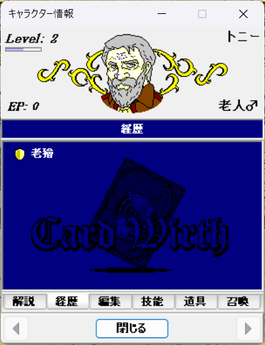
冒険者を右クリックして、「経歴」のタブを開くとこんな画面が出てきます。
みんなはゴブリン退治に行ったから、その称号がついてるはず。
まあ、「称号」とか「経歴」とか言うんだけど、
基本「クーポン」だね。
詳しくはここに目を通してほしいんだけど、
ここに冒険者の性格をぶち込むと、最近のシナリオなら反応します。
それって、ここに「バカ」とか入れると
セリフがバカ専用に分岐したりするってこと？
まあ、そういう捉え方でいい。
で、広く普及したクーポンをまとめているシナリオがあります。
こちら、CW号。量が違うので増刊号を推奨。
制作者がここで飽きたのでもとリンクを貼っておきます。
もとのさいと